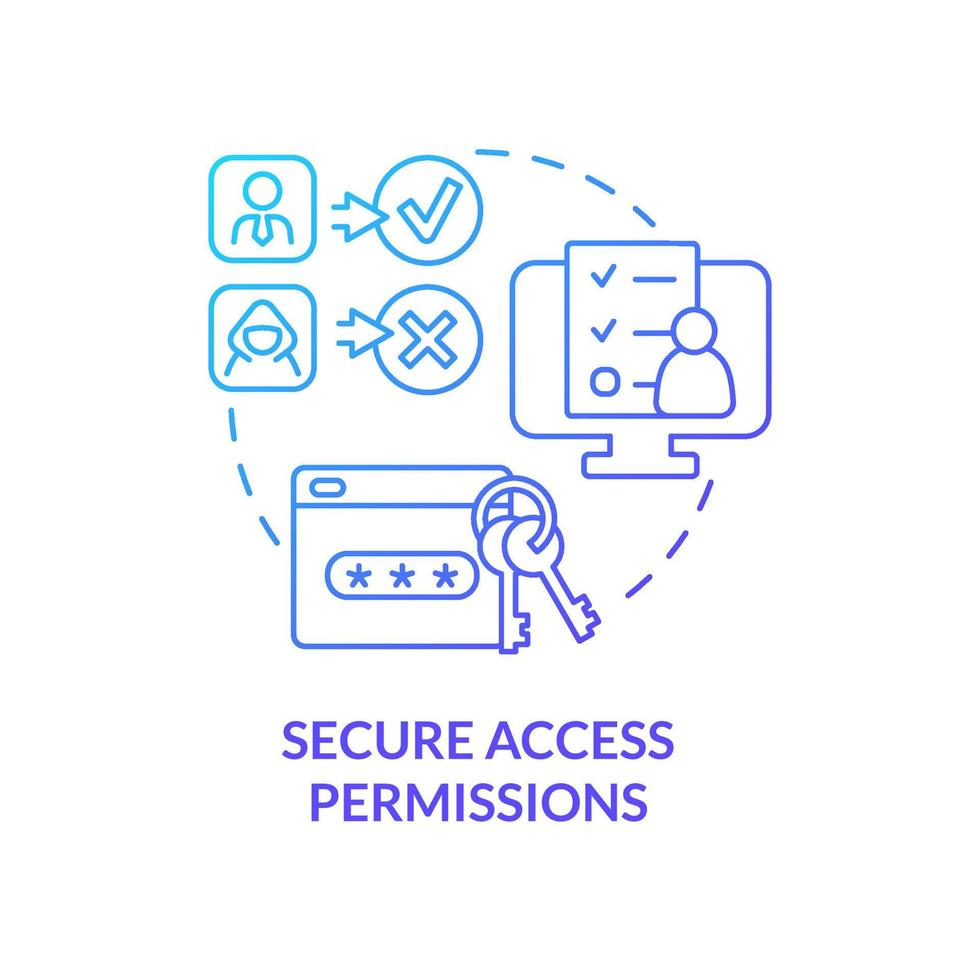
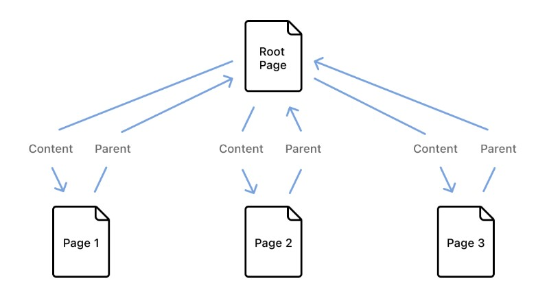
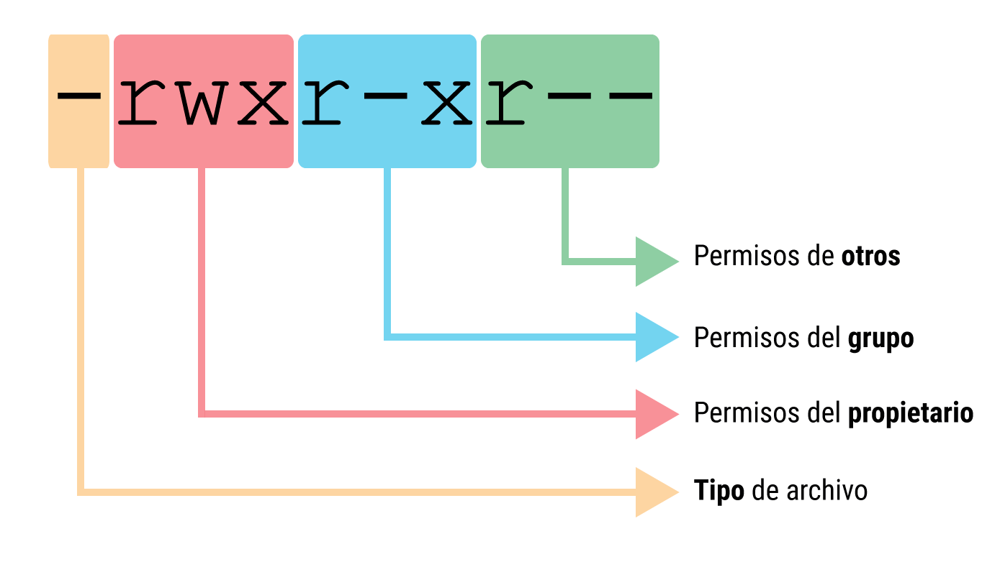
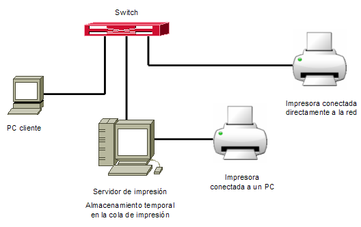
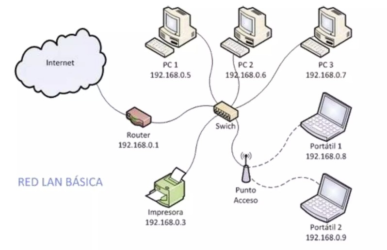
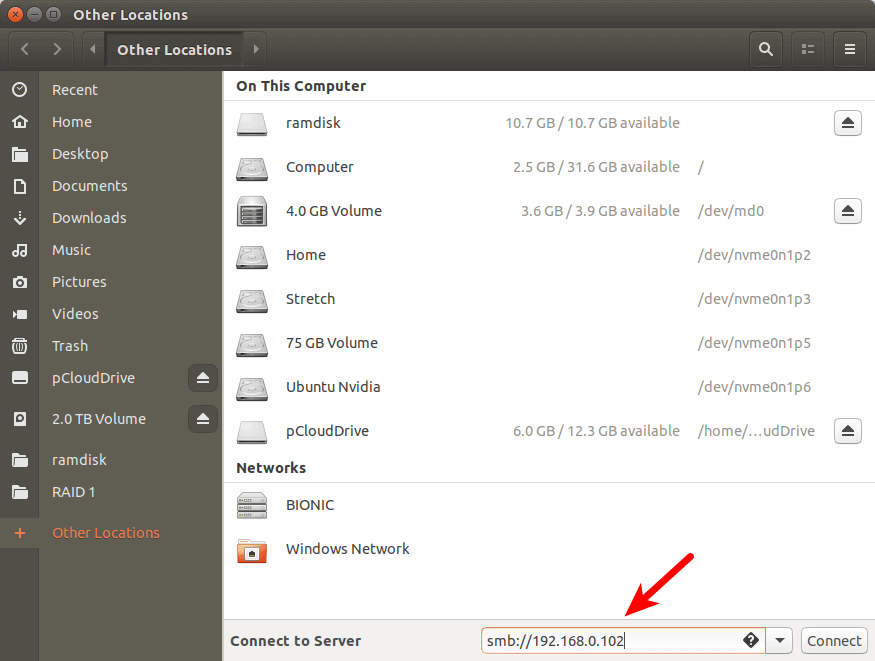

1. Permisos y derechos de acceso
En una red profesional, los recursos compartidos (carpetas, archivos, impresoras o dispositivos) no deben estar disponibles libremente. Es imprescindible definir quién puede acceder, qué puede hacer y bajo qué condiciones. Esta gestión se basa en dos conceptos clave: permisos y derechos de acceso.
- Permisos: regulan acciones sobre objetos concretos del sistema (archivos, carpetas, etc.).
- Derechos de acceso: regulan capacidades generales sobre el sistema (iniciar sesión, apagar, etc.).
- Una correcta configuración contribuye a una red segura, eficiente y ajustada a las necesidades de la organización.

1.1. Diferencias conceptuales
Aunque a menudo se usan como sinónimos, permiso y derecho no son lo mismo. Distinguirlos correctamente es clave para diseñar una política de seguridad coherente.
- Permiso: atribución específica sobre un recurso (archivo, carpeta, impresora). Determina si el usuario puede leer, escribir, modificar o eliminar.
- Derecho de acceso: privilegio general sobre el sistema (iniciar sesión localmente, realizar copias de seguridad, cambiar la hora, etc.).
- Ejemplo: un usuario puede tener derecho a iniciar sesión pero no permiso para abrir una carpeta compartida, o al revés.
1.2. Herencia de permisos
La herencia de permisos permite que un archivo o subcarpeta reciba automáticamente los permisos del contenedor donde se encuentra. Es una herramienta muy útil, pero que exige planificación y control para evitar accesos no deseados.
- Al crear un archivo dentro de una carpeta heredada, el archivo recibe esos mismos permisos.
- El administrador puede romper la herencia y definir permisos explícitos para un objeto concreto.
- Conviene revisar siempre si un permiso es explícito o heredado antes de modificarlo.

1.2.1 Herencia en Windows
En Windows, la herencia de permisos es un mecanismo fundamental para gestionar recursos compartidos de forma eficiente. Permite que los permisos asignados a una carpeta se propaguen automáticamente a sus archivos y subcarpetas, facilitando la administración en entornos con gran cantidad de recursos.
- Distingue entre permisos explícitos y heredados.
- Permite activar/desactivar la herencia y copiar permisos heredados para editarlos.

1.2.2 Herencia en GNU/Linux
En GNU/Linux, la herencia de permisos se gestiona de forma diferente según el sistema de archivos y las herramientas utilizadas. Es fundamental entender estas diferencias para configurar recursos compartidos de forma segura.
- GNU/Linux:
- Permisos tradicionales basados en owner, group y
others
con bits
r,w,x. - La herencia se emula con ACLs, umask y el bit setgid en directorios.
- Permisos tradicionales basados en owner, group y
others
con bits

2. Recursos compartidos en red
Compartir recursos en red permite que varios usuarios accedan a información, dispositivos y servicios comunes sin duplicar datos ni moverlos físicamente. Es una práctica esencial en entornos corporativos, educativos e institucionales.
- Fomenta el trabajo colaborativo y reduce costes de infraestructura.
- Debe realizarse bajo condiciones controladas y con criterios claros de acceso.
- Los recursos más habituales son las carpetas/archivos y las impresoras/dispositivos de red.

2.1. Carpetas y archivos
Las carpetas y archivos compartidos constituyen la forma más frecuente de distribuir información en red. En ellas se almacenan documentos internos, plantillas, informes o recursos de trabajo diario.
- Se comparten desde un servidor o estación que expone determinadas rutas del sistema de archivos.
- Se define quién puede leer, escribir, modificar o eliminar contenido.
- A menudo se combinan permisos de red con permisos del sistema de archivos local (NTFS, ACLs, etc.).
2.1. Compartición de carpetas en Windows Server
En Windows Server, la compartición de carpetas se configura combinando permisos de compartición (nivel red) y permisos NTFS (nivel sistema de archivos). Ambos deben ser coherentes para obtener el resultado esperado.
- Ejemplo: carpeta
\\servidor\proyectos:- Grupo Visitantes: solo lectura.
- Grupo Gestión: control total.
- La ruta UNC se utiliza para acceder a la carpeta desde otros equipos.
- Se pueden aplicar cuotas, auditoría de accesos o cifrado según la sensibilidad de los datos.
2.1. Compartición de carpetas en GNU/Linux
En GNU/Linux, la compartición de archivos se realiza habitualmente mediante servicios como Samba y NFS (Network File System), según si el entorno es mixto (Windows–Linux) o exclusivamente Unix/Linux.
- Samba:
- Comparte carpetas con equipos Windows mediante SMB/CIFS.
- Se configura en
/etc/samba/smb.conf, indicando ruta, permisos y acceso invitado.
- NFS:
- Protocolo habitual en entornos Unix/Linux para sistemas distribuidos.
- Se configura en
/etc/exports, especificando directorios y redes autorizadas.
# Fragmento típico de smb.conf (Samba)
\[proyectos]
path = /srv/proyectos
read only = no
guest ok = no
create mask = 0660
directory mask = 07702.2. Impresoras y dispositivos
Además de carpetas y archivos, también pueden compartirse en red impresoras, escáneres, discos externos u otras unidades, siempre que estén conectados a un equipo que actúe como servidor de dichos recursos.
- En oficinas y centros educativos es habitual una impresora para varios usuarios.
- En Windows, la compartición se realiza desde “Dispositivos e impresoras”, asignando permisos y nombre de recurso.
- En Linux, el sistema más extendido es CUPS, con administración web y control de colas de impresión.
- Es posible establecer cuotas, prioridades y restricciones horarias para un uso responsable.

3. Configuración de recursos compartidos
La configuración de recursos compartidos traduce la teoría en acciones concretas sobre el sistema operativo. Consiste en decidir qué se comparte, con quién, cómo y con qué permisos, utilizando herramientas gráficas o de línea de comandos.
- Debe garantizar seguridad, eficiencia y claridad en la gestión.
- Implica trabajar tanto con permisos de red como con permisos del sistema de archivos.

3.1. Entorno gráfico en Windows Server
El entorno gráfico de Windows Server permite compartir carpetas e impresoras de forma intuitiva, asignando permisos a usuarios o grupos del dominio. Es la forma más habitual en redes pequeñas o cuando se prioriza la configuración visual.
- Compartir una carpeta:
- Clic derecho → Propiedades → pestaña Compartir.
- “Uso compartido avanzado” → “Compartir esta carpeta” → definir nombre del recurso y permisos.
- Compartir una impresora:
- Panel de control → Dispositivos e impresoras → Propiedades → pestaña Compartir.
- Opción “Compartir esta impresora” y drivers adicionales para distintas arquitecturas.

3.1. Entorno gráfico en GNU/Linux
En distribuciones de escritorio (Ubuntu, Linux Mint, etc.), la compartición de carpetas se puede realizar desde el entorno gráfico, aunque suele ser más limitada que en Windows. Para entornos profesionales, se recomienda configurar Samba o NFS desde la línea de comandos.
En el directorio que se desea compartir, en la parte inferior se puede poner smb: IP del recurso.

3.2. Línea de comandos
La línea de comandos permite automatizar y documentar la configuración de recursos compartidos, siendo especialmente útil en servidores y entornos profesionales donde se requieren scripts repetibles y administración remota.
- En Windows se utilizan herramientas como PowerShell o el comando
net use / net sharepara crear y probar recursos compartidos. - En GNU/Linux se editan ficheros como
/etc/samba/smb.confo/etc/exportsy se gestionan servicios consystemctl. - La CLI facilita la integración con GPO, scripts de inicio de sesión y despliegues automatizados.
# Ejemplo orientativo (Windows PowerShell)
New-SmbShare -Name "Proyectos" -Path "D:\Departamentos\Proyectos" -FullAccess "DOMINIO\Gestion"
# Ejemplo orientativo (Linux - reiniciar Samba)
sudo systemctl restart smbd4. Seguridad y acceso
Una red corporativa o educativa debe ser segura, predecible y controlable. Compartir recursos sin una política de seguridad clara supone un riesgo para la integridad de los datos y el funcionamiento global del sistema.
- Definir correctamente permisos y derechos de acceso.
- Auditar quién accede a qué recurso y cuándo.
- Aplicar medidas complementarias como cuotas, restricciones horarias o filtrado por IP.
4.1. Control de acceso a recursos
Controlar el acceso a los recursos compartidos implica aplicar niveles de seguridad adecuados tanto en el sistema operativo como en la propia red.
- Principios:
- Menor privilegio: solo los permisos necesarios.
- Separación de funciones: evitar mezclar roles sin motivo.
- Auditoría y trazabilidad: registrar acciones relevantes.
- Medidas habituales:
- ACLs detalladas y control de acceso basado en roles (RBAC).
- Revisión periódica de recursos compartidos y carpetas sensibles.
- Aplicación de cuotas de disco y limitación de acceso por IP o subred.
4.2. Pruebas de acceso desde clientes
Una buena práctica consiste en comprobar los recursos compartidos desde la perspectiva de distintos perfiles de usuario, verificando que los permisos asignados son coherentes con lo esperado.
- Pruebas como usuario autorizado:
- Comprobar si ve la carpeta, puede abrir archivos y modificar o borrar cuando proceda.
- Pruebas como usuario no autorizado:
- Verificar que no puede acceder o ni siquiera ver el recurso sensible.
- Comprobaciones desde diferentes sistemas (Windows, Linux, móvil) y, si aplica, acceso externo mediante VPN.
- Herramientas: “Acceso efectivo” en Windows,
smbclientymounten Linux, scripts de conexión, etc.
Actividades de evaluación
- Bloque 1: Permisos y derechos de acceso (RA4CEa): creación de una carpeta, asignación de permisos diferenciados y comprobación.
- Bloque 2: Recursos compartidos en red (RA4CEb, RA4CEd): creación de carpetas “Profesores” y “Alumnos”, compartición con distintos niveles de acceso y prueba de uso.
- Bloque 3: Configuración de recursos compartidos (RA4CEc, RA4CEe): verificación de la estructura de carpetas y funcionamiento con usuarios de diferentes grupos.